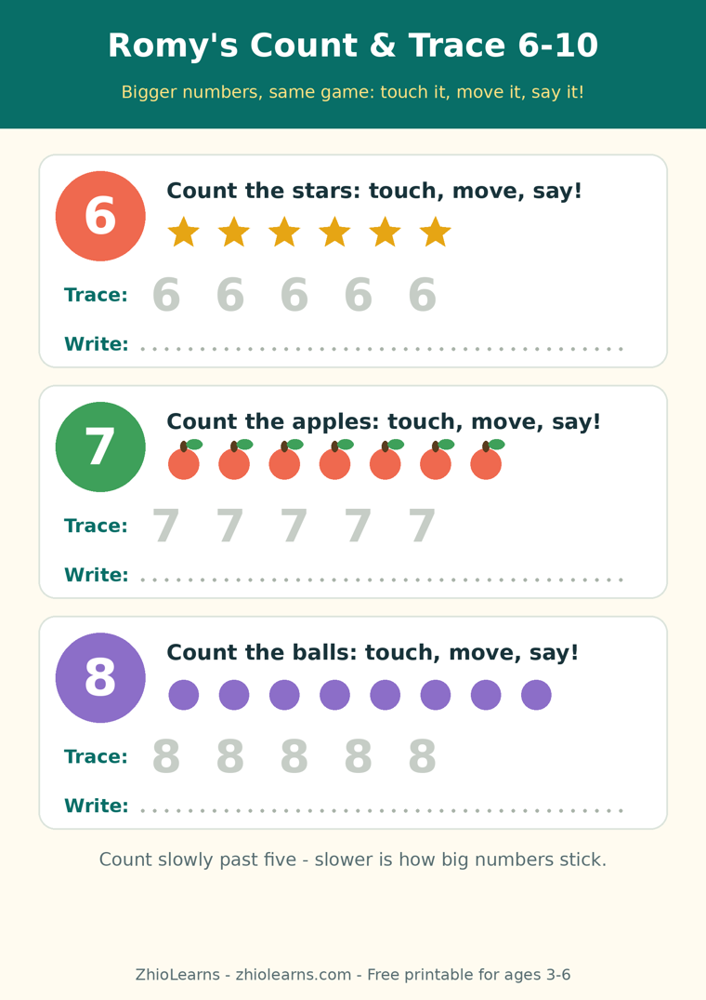

See It in a Flash: The Five-Second Game That Builds Real Number Sense
Put three blueberries on a plate tomorrow morning. Cover them with your hand. Lift your hand for just two seconds — long enough to look, not long enough to count — then cover them again and ask, with genuine curiosity: “How many did you see?”
There is a good chance your child answers “three” straight away. No pointing. No one-two-three under their breath. They simply saw three, the way you see three dots on a dice without adding anything up. That small moment is a real maths milestone, and most parents walk straight past it because nobody told them to watch for it.
Seeing a number is different from counting to it
Counting is a routine a child performs: point, say a word, point, say a word. Recognising a small group at a glance is something else. Teachers call it subitizing — an ordinary word would be “just seeing it” — and it is the bridge between counting things one by one and understanding numbers as amounts that can be held in the mind all at once.
You can feel the difference in yourself. Show an adult four dots arranged like the corners of a square and they know it is four instantly. Scatter the same four dots at random and they pause and count. Children are the same, only their “instant” range is smaller: most three- and four-year-olds can just-see one, two and three, and five-year-olds are stretching toward four and five, especially when the arrangement looks familiar, like a dice or a domino.
How to play the flash game
The game takes five seconds, and it works at the breakfast table, in the bath, or with buttons on the sofa. The whole method fits in three lines:
Cover. Hide a small group under your hand or a cup — start with two or three things, never more.
Flash. Lift your hand, count silently to two, and cover the group again.
Ask. “How many did you see?” Then lift the hand and count them together to check — the checking is part of the fun, not a test result.
Two things keep it a game instead of an exam. First, if your child wants to count during the flash, let them. Counting is not the wrong answer; it is the road that leads to seeing, and plenty of children count very fast and quietly for weeks before the answer starts arriving whole. Second, stop on a laugh. Three or four flashes is a full session. The groups will still be there tomorrow, and tomorrow’s eyes will be a little quicker.
When the small numbers get easy
Once two and three feel solid, arrange four as a square and five as a dice face — patterns are easier to just-see than scattered piles, which is exactly why dice and dominoes have survived every toy cupboard clear-out in history. And expect wobbles: a child who just-sees four on Tuesday may count it on Wednesday because they are tired, or hungry, or thinking about something else entirely. Number sense grows the way language does — in spirals, not straight lines.
What you are really building, flash by flash, is trust in amounts. A child who can hold “four” in their mind as one picture is a child who will soon be ready to split it — two and two — and put it back together. That is the doorway to adding and taking away, and it opens at the breakfast table, over blueberries.
A counting book with room to look
Romy’s Big Number Adventure was built for this stage, for ages 3–5. Its pages carry big, friendly numbers and one clear group of things to count on every page — uncluttered enough that a child can take the group in at a glance first, and then point and count to check, which is the flash game in book form. Parents reach for it for preschool and kindergarten readiness; children just think they are adventuring with a raccoon.
Try a flash over a page tonight. Then print the free sheet below tomorrow: count the pictures, then trace the big number you just counted — seeing, counting and writing, in that order.
🖨️ Free printable: Romy’s Count & Trace 6–10

Count the pictures on each row, then trace the big number — the follow-on to our Count & Point 1–5 sheet. Two pages, ages 3–6, free, no sign-up needed to print it.
Download the free printable (PDF)📚 Today’s book
Find Romy’s Big Number Adventure and Romy’s other books in our little shop — and read Romy’s Alphabet Picnic free in the Storytime section.
See Romy’s books →🌿 More from the Parent Corner
Before the pencil comes out, letter shapes can be learned by feel — trace one big letter on your child’s back and let them guess it.
Write It on My Back →